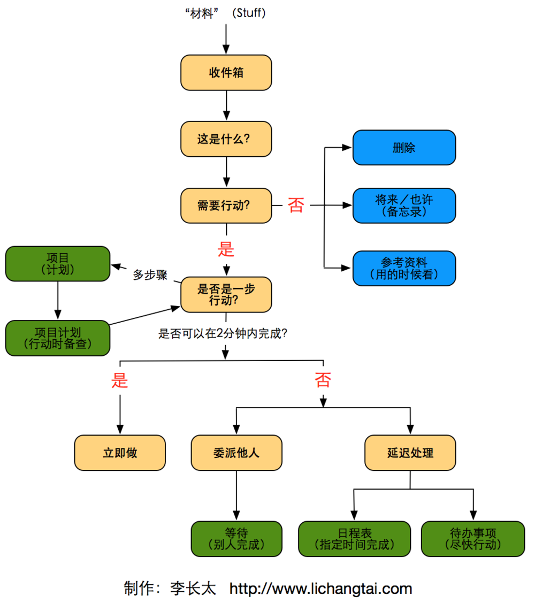
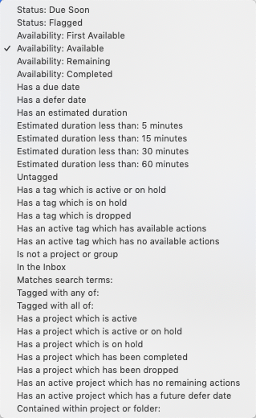

之前用过滴答清单，发觉过滤器不是那么好用。所以就试用了一下 OminiFocus 这个被广大群众推荐的工具。事实上这个工具的入门有点让人苦恼，首先要对 GTD 的概念有一个明确的框架概念才能好好的用起来。
对于 GTD 介绍，GTD 只是一套理解和规则，掌握了他的理论及规则，用什么工具都可以实现 GTD。就比如书上，就是用文件夹，便签等来处理也是可以的。
流程图

没找到书上的图片，就把别人画的弄过来，其实是一样的。
GTD 一书都是根据这个流程来进行讲解的，很多人觉得这书太过啰嗦了，但其实对于理解一下为什么那样做，确实是很有必要啰嗦详细介绍的。但是当我们理解了之后，就不再需要那么详细的东西了，将其概括为我们自己的行动就行了。
目的
建立一个 GTD 目的：
- 解放大脑，不要让我们的脑海里面存在很多“悬而未决”的事务而降低效率。
- 在不同的情境（环境，时间，工具）下能立刻知道，并能立刻执行一个动作，推动事务的完成。
- 有效的回顾和跟踪自己事务的完成情况。
基于上面三个目的，简单的几个步骤就是：
- 收集。将所有的想法，待办事项到一个地方。 Ominifocus 中，叫做 Inbox
- 处理。在 Inbox 中的内容，我们应该抽时间及时进行清空。如何清空？考虑每一条记录下一个确切的动作应该是什么；如果有多个动作的，还要将其转换为项目。
- 清单。我们将 Inbox 中的所有事务的下一步动作都整理好后，根据不同的场景或我们自己的要求来定义对应的清单。这里，就会用到 OminiFocus 的透视功能。
- 回顾。系统需要不停的完善，事务的完成情况需要不断的进行跟踪，委派他人的事项需要进行跟进。
项目的定义
必须多个动作才能完成的一个事务，叫做项目。
收集
通过 mail drop 来将所有的待办事务进行收集到 Inbox。
处理
事实上这是最难的一步。我们必须提交的安排和判断，对于每个事务我们的下一步动作是什么，这（些）动作需要在什么时候完成，需要多少时间，要什么工具才能完成。
对于暂时不需要完成的动作，我们该怎么处理？是丢弃还是归档，还是抽时间进行阅读？还是需要在有用的时候进行参考？
一个只需要两分钟就能完成的动作，请立刻执行。
对于自己不是最适合完成这个动作的，委派给最适合完成的人完成，自己进行跟踪。
分类
对于我们的每个事务，如果需要多个动作的，那么需要转换为项目。是不是上很多时候，我们的事务都需要多个动作，而不是可以一下子完成的。所以有必要将我们的项目（多个动作），或单个动作进行分类。这利用到了 OminiFocus 的 文件夹（Folder） 功能。如何分类，完全看自己的需求。就我而言，完将其分为：
- 工作
- 生活
- 学习
。。。。
这是一个比较大的一级分类，比如工作，其下可以根据工作的类型：执行，沟通，反馈；或者是开发，BUG 等等。。全看自己如何进行组织。
是按性质，还是按项目进行分类，这是一个比较艰难的抉择。但只有自己保持一个清晰的概念，这不是一个特别重大的问题。当你在对 Inbox 事务进行处理的时候，不要因此犹豫该放在什么地方就OK了。
附加属性
OminFoucs 对每个动作，都提供了一些额外附加的属性。大体分为：
- 状态。活跃，完成，标注
- 标签。自定义
- 日期。持续时间，推迟日期，截止日期
- 重复
。。。
其提供的过滤器，可以对上面的这些属性进行过滤，形成透视。
OminiFocus 术语
有必要了解一下其术语，方才能更好的设计我们的系统。
具体完整的列表查看 这里
- Item 条目：Ominifocus 数据库中对任务和待办事项的表示。条目类型包括：Inbox 条目，动作，项目，分组。
- Available 可用性：一种条目状态和包括未被屏蔽，推迟和暂停的条目视图选项。
- Blocked 屏蔽：在一个序列化项目中的非第一个可用动作状态，根据在项目中的位置来计算。通过移动动作的位置到最上面可以改变这个状态。
- On Hold 暂停：与我们当前的计划不相关的项目或标签的状态。
过滤器
虽然当前其提供了不少的过滤器，但是实际上还是有局限性的，我们为了更符合自己的要求，不能不设计一套适合自己用的标签系统。

从上面的过滤选项来看，其大体分为：
- 动作状态
- 可用性
- 截止日期
- 持续时间
- 标签状态
- 活跃标签是否有可用动作
- 标签
- 项目状态
- 活跃项目是否有可用性动作
- 归属文件夹或项目
项目状态
Due Soon，即将截止，关于这个 Due Soon 默认定义的是 2 天内。
Flagged 表示标注为重要事项。
可用性
动作的可用性从 推迟日期，项目类型，项目或标签的状态 进行计算。
有几种情况：
- First Available：第一个可用。
- Available：可用
- Remaining：等待。表示未完成或丢弃的条目。
- Completed：完成
标签与项目
标签与项目都是有状态的。活跃，完成，暂停。完成，丢弃。
透视
将 Inbox 中的条目进行处理过后，我们已经有了一大串的动作列表。我现在关注的问题是，在不同的环境，不同的条件下：
- 我该干什么。
更细致一点，如果我现在只有20分钟，我需要在我该干的事务中找出
- 我现在能干什么
而有的事情，我们必须得在特定的时间完成，所以我还需要知道：
- 我必须干完什么。
所以我们可以把事务分为：
- 有截止日期的 Due
- 需要尽快执行的 使用标签：Schedule
- 委派他人完成需要跟进的 使用标签 AssignTo
- 时间不迫切，但是需要做的。 Recently
- 时间充足的时候可以做一下的 SomeDay
动作的执行优先级：
标签
- Schedule
- Today
- ThisWeek
- ThisMonth
- Recently
- AssignTo
- Json
- Jack
- ….
工作清单
Today
过滤出 Due Soon （我定义为当天，拥有截止日期的才会有此提示）。
或 有标签 Today的。
这样做的意义是：如果过了 Due Date 还没有完成，那么因为有 Today 标签，我在过滤的时候，依然能看到我超期的任务需要在今天完成。
排序： Due Date
Next
下一步要做的工作。使用标签中的 ThisWeek, ThisMonth 及有一个 Due 的动作。
在处理 Next 之前，确保先把 Today 内的事务处理完毕。
排序：Due
Future
将来需要完成的任务，不需要截止日期。但是需要打上一个 Recently 标签即可，或者有一个非活跃（SomeDay）的标签。
排序： Recently, SomeDay
Wait
过滤出有标签 AssignTo 的事务。